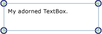

Общие сведения о декоративных элементах
Графические элементы — это специальный тип FrameworkElement, которое используется для предоставления визуальных сигналов пользователю. Помимо прочего, декоративные элементы можно использовать для добавления функциональных дескрипторов к элементам или предоставления информации о состоянии элемента управления.
Сведения о декоративных элементах
Adorner Является пользовательским FrameworkElement , привязанный к UIElement. Графические элементы отображаются в AdornerLayer, который является поверхностью отрисовки, всегда находится на вершине декорируемого элемента или коллекции настроенных элементов. Отрисовка декоративного элемента не зависит от отрисовки UIElement , к которому привязан декоративный элемент. Декоративный элемент обычно располагается относительно элемента, к которому он привязан, с использованием стандартной двухмерной системы координат с началом отсчета в левом верхнем углу графического элемента.
Типичные сценарии использования декоративных элементов:
Добавление функциональных обработчиков к UIElement , позволяющие пользователю свободно манипулировать элементом (изменять размеры, вращать, перемещать, и т.д.).
Обеспечение визуальной обратной связи для указания различных состояний или в ответ на различные события.
Наложение визуальных декоративных эффектов на UIElement.
Визуальная маскировка или переопределение, частично или полностью UIElement.
Windows Presentation Foundation (WPF) Предоставляет базовую среду для декоративных визуальных элементов. В следующей таблице перечислены основные типы, используемые при настройке объектов, и их назначение. Ниже приведено несколько примеров использования.
| Adorner | Абстрактный базовый класс, из которого наследуются все конкретные реализации декоративного элемента. |
| AdornerLayer | Класс, представляющий слой отрисовки декоративного элемента одного или нескольких настроенных элементов. |
| AdornerDecorator | Класс, который позволяет ассоциировать слой декоративного элемента с коллекцией элементов. |
Реализация пользовательского декоративного элемента
Среда декоративных элементов, предоставляемая Windows Presentation Foundation (WPF), предназначена в первую очередь для поддержки создания пользовательских декоративных элементов. Пользовательский декоративный элемент создается путем реализации класс, наследующий от абстрактного Adorner класса.
Note
Родительский Adorner — AdornerLayer , отображающий Adorner, не оформляемого элемента.
В следующем примере показан класс, который реализует простой декоративный элемент. В примере декоративный элемент просто украшает углы UIElement закруглениями.
// Adorners must subclass the abstract base class Adorner.
public class SimpleCircleAdorner : Adorner
{
// Be sure to call the base class constructor.
public SimpleCircleAdorner(UIElement adornedElement)
: base(adornedElement)
{
}
// A common way to implement an adorner's rendering behavior is to override the OnRender
// method, which is called by the layout system as part of a rendering pass.
protected override void OnRender(DrawingContext drawingContext)
{
Rect adornedElementRect = new Rect(this.AdornedElement.DesiredSize);
// Some arbitrary drawing implements.
SolidColorBrush renderBrush = new SolidColorBrush(Colors.Green);
renderBrush.Opacity = 0.2;
Pen renderPen = new Pen(new SolidColorBrush(Colors.Navy), 1.5);
double renderRadius = 5.0;
// Draw a circle at each corner.
drawingContext.DrawEllipse(renderBrush, renderPen, adornedElementRect.TopLeft, renderRadius, renderRadius);
drawingContext.DrawEllipse(renderBrush, renderPen, adornedElementRect.TopRight, renderRadius, renderRadius);
drawingContext.DrawEllipse(renderBrush, renderPen, adornedElementRect.BottomLeft, renderRadius, renderRadius);
drawingContext.DrawEllipse(renderBrush, renderPen, adornedElementRect.BottomRight, renderRadius, renderRadius);
}
}
На следующем рисунке показана SimpleCircleAdorner, применяется к TextBox.

Поведение отрисовки для декоративных элементов
Важно отметить, что декоративные элементы не включают какое-либо обязательное поведение отрисовки. За результат применения декоративного элемента отвечает его автор. Распространенным способом реализации поведения отрисовки является переопределение OnRender метод и использование одного или нескольких DrawingContext объекты для отрисовки декоративных элементов по мере необходимости (как показано в приведенном выше примере).
Note
Все, что помещено в слой декоративного элемента, отрисовывается поверх остальных установленных стилей. Другими словами, декоративные элементы всегда визуально находятся сверху и не могут быть переопределены с помощью упорядочения по z-координате.
События и проверка нажатия
Декоративные элементы получают входные события так же, как и любой другой FrameworkElement. Так как декоративный элемент всегда имеет высокий z порядок, чем элемент, который он декорирует, получает входящие события (такие как Drop или MouseMove), могут быть предназначены для базового декорируемого элемента. Декоративный элемент может отслеживать определенные события ввода и передавать их в базовый декорированный элемент, повторно запуская событие.
Чтобы включить сквозную проверку нажатия элементов под декоративным элементом, задайте нажатия IsHitTestVisible свойства false декоративного элемента. Дополнительные сведения о проверке нажатия см. в разделе
Проверка нажатия в визуальном слое.
Декорирование одного элемента пользовательского интерфейса
Для привязки декоративного элемента к конкретному UIElement, выполните следующие действия:
Вызовите статический метод GetAdornerLayer для получения AdornerLayer для объекта UIElement декорируемого. GetAdornerLayer Пошаговое описание вверх по визуальному дереву, начиная с указанного UIElementи возвращает первый слой графических элементов, которые найдет. (Если слои декоративных элементов не найдены, метод возвращает значение 0.)
Вызовите Add метод для привязки декоративного элемента к целевому объекту UIElement.
Следующий пример связывает SimpleCircleAdorner (как показано выше) для TextBox с именем myTextBox.
myAdornerLayer = AdornerLayer.GetAdornerLayer(myTextBox);
myAdornerLayer.Add(new SimpleCircleAdorner(myTextBox));
Note
Использование XAML для привязки декоративного элемента к другому элементу в настоящее время не поддерживается.
Декорирование дочерних объектов панели
Для привязки декоративного элемента к дочерним элементам Panel, выполните следующие действия:
Вызовите
staticметод GetAdornerLayer найти слой графических элементов для элемента, дочерние элементы которого нужно декорировать.Перечислите дочерние элементы родительского элемента и вызовите Add метод для привязки декоративного элемента для каждого дочернего элемента.
Следующий пример связывает SimpleCircleAdorner (как показано выше) к дочерним элементам StackPanel с именем myStackPanel.
foreach (UIElement toAdorn in myStackPanel.Children)
myAdornerLayer.Add(new SimpleCircleAdorner(toAdorn));